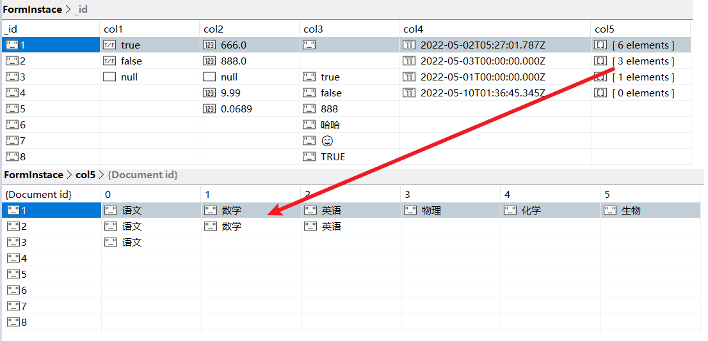

这里整理更新一些 .net 中使用 mongodb 的东东……
查询，用的场景太多了，这和用什么数据库没关系。各行各业，各种各样的需求，都离不开查询……曾经想着，弄一个类，一统查询江湖，之后呵呵了。
到目前为止，共弄了两种实现方式：1、嵌套递归的方式（类中的一个属性指向自身）2、逻辑表达式的方式。
下面介绍一下这两种方式，首先是代码：
上面是一些基础的或者帮助类代码，之后就是测试一下了，这里创建了一个WebAPI项目，下面是示例代码：
api创建完之后，我们得准备一下测试数据了

到这里该准备的都准备好了，就差最后一哆嗦了
请求地址：http://localhost:5251/api/Instance/QueryTestFactors
请求方式：POST
请求参数：如下
返回结果：如下
"QueryTestFactors"这个API对最小查询单位进行批量测试，基本涵盖了枚举定义的数据类型以及比较方式。"QueryByQueryFactor"、"QueryByQueryUnit"、"QueryByQueryModel"这个几个API都是在查询因子的基础上拼接出来的。 "QueryModelExpression"这个就是上面说的逻辑表达是的方式了，形如：((1&2)|3)&4 。1、2、3、4等指的是QueryUnit，哈哈，不知道能不能理解。